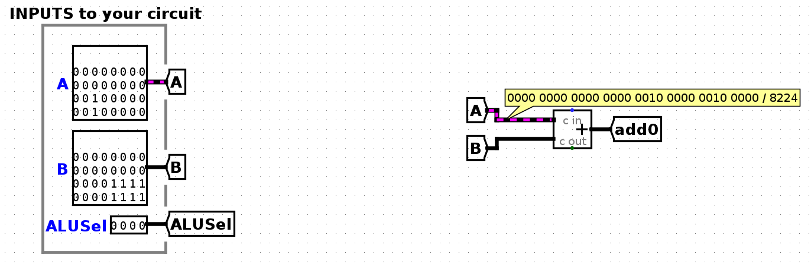

测试与调试
我们为您提供了一些测试，但它们并不全面。我们强烈建议在可能的情况下编写额外的自定义测试。
概述
测试框架位于test.sh和tests目录中。测试模块以test_前缀命名：
- 单元测试检查子电路的功能（例如立即数生成器、分支比较器）。它们不检查整个CPU实现。单元测试以
unit-为前缀，例如test_alu单元测试（模块）的测试位于unit-alu目录中。 - 集成测试在整个CPU上执行RISC-V指令（来自文件），并将输出与在Venus上运行这些指令的结果进行比较。集成测试以
integration-为前缀，例如test_addi集成测试（模块）的测试位于integration-addi目录中。 - 自定义测试是您通过编写RISC-V指令创建的自定义集成测试（测试框架将为您创建测试和调试电路）。强烈推荐自定义测试，因为我们的单元测试和集成测试并不全面。所有自定义测试应在
test_custom模块中。 在每个测试目录中，有一组测试。每个测试最多有三种类型的文件，都以测试名称本身命名。
每个测试模块在其目录中可以包含以下组件：
.circ文件：可用于调试的.circ Logisim测试电路。测试模块中的每个测试有一个电路文件。out/目录：每个测试模块包含一个out/目录，用于存储您的结果（.out）和参考结果（.ref）。in/文件：集成和自定义测试包含一个in/目录，用于存储RISC-V指令.s文件。集成或自定义测试模块中的每个测试有一个代码文件。
运行测试
所有测试都通过根目录中的test.sh脚本启动。
-
要查看所有测试模块和基本命令，不带参数运行
test.sh：$ bash test.sh -
单元和集成测试：
bash test.sh test_module，例如：$ bash test.sh test_alu $ bash test.sh test_addi -
自定义测试：
$ bash test.sh test_custom
注意：您可以运行bash test.sh part_a或bash test.sh part_b来运行特定项目阶段的所有测试。查看所有测试模块以获取完整的命令列表。
查看输出文件
当测试失败时，脚本将通过显示您的子电路输出与参考输出之间的差异来指向out/目录。
使用bash test.sh format [path_to_file]将输出的十六进制值渲染为可读的表格，例如：
$ bash test.sh format tests/unit-alu/out/alu-add.ref # reference
$ bash test.sh format tests/unit-alu/out/alu-add.out # your subcircuit
检查调试电路
每个单元测试都有一个.circ测试电路用于调试。在测试电路内部：
- 测试线架：电路从ROM块向您的组件输入一系列输入（信号或指令）。这些线架电路在
harnesses/中，但您应该从测试电路访问它们，测试电路将您的子电路连接到线架。 - 子电路访问：要查看您的子电路（例如ALU），右键点击它并选择"View [name]"，或点击放大镜图标。
- 探针：探测导线以访问其当前值。
- 仿真：
- 要查看后续输入，点击Simulate → Manual Tick Full Cycle，这将高亮ROM块的下一行并将此下一个输入发送到您的子电路。您可以在查看ALU子电路时跳动周期以查看后续输入。
- 要重置仿真，点击Simulate → Reset Simulator。您也可以关闭并重新打开调试电路。
重要：避免在测试电路中进行编辑，因为它们可能会丢失！
调试单元测试
作为示例，让我们在未修改的起始代码上调试alu-add单元测试。
运行测试
$ bash test.sh test_alu
查看输出文件
-
查看参考输出：
$ bash test.sh format tests/unit-alu/out/alu-add.ref Time ALUSel A B ALUResult 00 0 00002020 00000f0f 00002f2f 01 0 ffffdead ffffbeef ffff9d9c 02 0 00007fff 00000001 00008000这显示了每个时间步发送到子电路的输入（
A、B和ALUSel）以及预期输出（ALUResult）。 -
查看您的子电路输出。以下是在未修改的起始代码上运行测试时的输出：
$ bash test.sh format tests/unit-alu/out/alu-add.out Time ALUSel A B ALUResult 00 0 00002020 00000f0f UUUUUUUU 01 0 ffffdead ffffbeef UUUUUUUU 02 0 00007fff 00000001 UUUUUUUU 03 0 00000000 00000000 UUUUUUUU
请注意，在示例中，子电路的输入相同，但子电路的输出（ALUResult）不同（未定义）。
检查调试电路
打开tests/unit-alu/alu-add.circ，对应上一节中失败的测试。
-
查看测试线架：您在此电路中首先看到的是测试线架：

这会向您的ALU输入一系列输入（
InputA、InputB和ALUSel）。ROM（在红色框中）包含电路的输入列表。第一个输入（
InputA = 0x00002020、InputB = 0x00000f0f、ALUSel = 0b0000）以深灰色高亮显示。您还可以通过探针看到这些值被传入ALU（在蓝色框中）。 -
访问子电路：在此图片中，ALU的
ALUResult输出未定义（全部为U）。要了解原因，我们可以查看ALU子电路以了解它正在执行什么逻辑。通过以下方式之一点击进入ALU：

<pre data-shortcode><details >

-
探测导线：如果子电路的输出不是您预期的，您可以探测导线以调查不正确输出的来源。
在ALU子电路内部，您可以看到从线架提供给子电路的输入（
A、B和ALUSel）。您可以点击导线查看其中的值：
在起始电路中，
ALUResult输出未定义。在这种情况下，请注意ALUResult隧道未定义，所以我们可能需要向此隧道发送一个值。要返回线架，您可以点击左上角Simulate → Active Simulations选项卡中的
main。 -
仿真：
要查看后续输入，点击Simulate → Manual Tick Full Cycle，这将高亮ROM块的下一行并将此下一个输入发送到您的子电路。您可以在查看ALU子电路时跳动周期以查看后续输入。
要重置仿真，点击Simulate → Reset Simulator。您也可以关闭并重新打开调试电路。
调试集成测试
除了下面的示例外，请查看此视频了解有关编写集成测试的信息。
作为示例，让我们调试test_addi集成测试模块中的addi-basic测试。同样，我们从未修改的起始代码开始。
运行测试
$ bash test.sh test_addi
如果测试未通过，这将打印出CPU输出与参考输出之间的差异。在访问此代码之前，我们应该弄清楚此测试尝试在CPU上运行什么指令。
查看测试代码
在我们弄清楚此测试为什么失败之前，我们首先应该弄清楚此测试尝试在CPU上运行什么代码。查看addi-basic测试代码：
$ vim tests/integration-addi/in/addi-basic.s
您应该看到这些指令：
addi t0, x0, 1
addi t0, x0, 42
addi t0, x0, 256
addi t0, x0, 2047
读取测试输出
让我们回到运行test_addi的原始终端输出。以下是addi-basic测试的片段。每行输出显示在运行输入程序的每个时间步的程序计数器（PC）、指令和8个调试寄存器中的值。
FAIL: tests/integration-addi/addi-basic.circ (Did not match expected output)
Time PC Instruc. ra (x1) sp (x2) t0 (x5) t1 (x6) t2 (x7) s0 (x8) s1 (x9) a0 (x10)
Reference: 0001 00000004 02a00293 00000000 00000000 00000001 00000000 00000000 00000000 00000000 00000000
Student: 0001 00000004 02a00293 00000000 00000000 00000000 00000000 00000000 00000000 00000000 00000000
---
Reference: 0002 00000008 10000293 00000000 00000000 0000002a 00000000 00000000 00000000 00000000 00000000
Student: 0002 00000008 10000293 00000000 00000000 00000000 00000000 00000000 00000000 00000000 00000000
---
Reference: 0003 0000000c 7ff00293 00000000 00000000 00000100 00000000 00000000 00000000 00000000 00000000
Student: 0003 0000000c 7ff00293 00000000 00000000 00000000 00000000 00000000 00000000 00000000 00000000
- 您可能会看到很多行输出，但让我们关注前两行，这显示了您的CPU与参考输出不匹配的第一个时间步。在这种情况下，是时间步1。
- 在第一组参考/学生输出中，查找值不匹配的寄存器。在上述输出中，t0应该持有值1，但在您的CPU中，t0持有值0。
使用终端输出和RISC-V代码，尝试找出第一个失败时间步之前的时间步出了什么问题。
出了什么问题？
在此输出中，由于不正确的输出出现在时间1，时间0一定出了问题。在时间0，RISC-V代码执行了addi t0, x0, 1——现在我们可以看到为什么参考输出中t0有一个1。但是，我们的实现没有在t0中放入1，所以看起来第一条addi指令没有正确执行。
在addi-basic等测试中，RISC-V指令按顺序执行，因此很容易确定哪条指令失败了。例如，如果终端输出的第一行显示时间步0003，您就知道时间步2的指令失败了，这条指令一定是addi t0, x0, 256（测试代码中的第二条指令，从零开始索引）。
检查调试电路
打开tests/integration-addi/addi-basic.circ，对应test_addi模块中失败的addi-basic测试。
-
查看测试线架：

每个集成测试的顶层线架包含一个ROM块（截图下半部分），其中包含该测试的RISC-V指令，代表IMEM（指令内存）。这些指令被传入您的CPU（顶部圈出的
cpu_harness块）。您还可以看到8个调试寄存器输出；测试框架在运行测试时会将其值记录到.out文件中。 -
访问子电路：要查看您的CPU电路，可以
- 右键点击
cpu_harness块并选择"View cpu_harness"，或 - 点击
cpu_harness块并点击放大镜。
这将带您进入CPU线架，您的CPU在此与内存交互。
再次点击进入
cpu块，现在您应该能看到您一直在连线的CPU。 - 右键点击
-
仿真：要逐步执行RISC-V指令，点击Simulate → Manual Tick Full Cycle。
- 在每个时钟周期中，您的CPU将向线架输出新的
ProgramCounter，线架将使用新的PC为您的CPU选择下一条要执行的指令。 - 在此
addi测试中，指令按顺序执行，但稍后测试分支和跳转时，CPU可能输出不同的ProgramCounter值（不总是加4）并以不同的顺序执行指令。
要重置仿真，点击Simulate → Reset Simulator。您也可以关闭并重新打开调试电路。
- 在每个时钟周期中，您的CPU将向线架输出新的
-
探测导线
此时，您应该已经确定了电路上哪条RISC-V指令失败，该指令后的预期寄存器值以及您的寄存器值。您还应该已经打开了调试电路并跳动时钟直到失败的指令。现在，是时候检查电路中的所有导线以了解此指令为何失败。
一些您可以探测的有用导线：
- 如果指令写回寄存器：哪个RegFile输入对应我们在此周期写入的数据？
- 如果指令使用ALU进行计算：ALU的三个输入（A、B和ALUSel）是什么，它们是否符合预期？ALU的输出是什么，是否符合预期？
- 如果指令是分支/跳转：下一个时钟周期写入PC寄存器的值是什么？该值是否符合预期？哪个控制逻辑信号决定写入PC寄存器的值？该信号是否具有正确的值？
- 如果指令是存储/加载指令：DMEM的三个输入是什么，它们是否符合预期？DMEM的输出是什么，是否符合预期？
注意：如果失败的指令是加载指令，可能是您的存储指令首先未能写入DMEM，现在加载指令无法读取从未写入DMEM的值。在这种情况下，您可能也想在存储指令处停下来检查它们是否按预期工作。
我们建议插入一个时间步计数器电路来计算指令数。见下文。
调试集成测试：时间步计数器
当指令不按顺序执行时，可能很难确定需要跳动多少周期才能到达第一条失败的指令。为了简化此过程，我们建议在cpu.circ电路中添加一个小型计数器电路：

- 这与起始代码中的PC电路逻辑相同，只是计数器电路在每个时间步加1而不是加4。
ProgramCounter隧道也已被替换为探针，让您在调试时可以查看导线的值。- 此计数器电路仅用于调试，不用于CPU实现。当您修改PC电路以处理跳转和分支时，此计数器电路仍将在每个时间步加1，让您可以跟踪第一条失败指令何时出现。
您可以使用此计数器在第一条失败指令处停止。例如，如果您的终端输出如下所示：
$ bash test.sh test_integration_branch
FAIL: tests/integration-branch/branch-basic.circ (Did not match expected output)
Time PC Instruc. ra (x1) sp (x2) t0 (x5) t1 (x6) t2 (x7) s0 (x8) s1 (x9) a0 (x10)
Reference: 0006 00000010 fe04cce3 00000000 00000000 00000000 00000000 00000000 ffffffff 00000001 00000000
Student: 0006 00000028 fe000ce3 00000000 00000000 00000000 00000000 00000000 ffffffff 00000001 00000000
---
Reference: 0007 00000014 fe000ce3 00000000 00000000 00000000 00000000 00000000 ffffffff 00000001 00000000
Student: 0007 00000020 fe904ce3 00000000 00000000 00000000 00000000 00000000 ffffffff 00000001 00000000
---
您知道时间步5的指令失败了，因此您应该进入调试电路并跳动时钟直到计数器电路显示5。现在，您可以开始检查当前正在执行什么指令，以及为什么它失败了。
调试跳转/分支测试
当我们运行带有跳转和分支的代码时，RISC-V指令不按顺序执行，因此我们需要更加小心地确定哪条指令失败了。考虑以下输出：
$ bash test.sh test_integration_branch
FAIL: tests/integration-branch/branch-basic.circ (Did not match expected output)
Time PC Instruc. ra (x1) sp (x2) t0 (x5) t1 (x6) t2 (x7) s0 (x8) s1 (x9) a0 (x10)
Reference: 0005 00000018 fe948ce3 00000000 00000000 00000000 00000000 00000000 ffffffff 00000001 00000000
Student: 0005 00000024 fe944ce3 00000000 00000000 00000000 00000000 00000000 ffffffff 00000001 00000000
---
Reference: 0006 00000010 fe04cce3 00000000 00000000 00000000 00000000 00000000 ffffffff 00000001 00000000
Student: 0006 00000028 fe000ce3 00000000 00000000 00000000 00000000 00000000 ffffffff 00000001 00000000
---
Reference: 0007 00000014 fe000ce3 00000000 00000000 00000000 00000000 00000000 ffffffff 00000001 00000000
Student: 0007 00000020 fe904ce3 00000000 00000000 00000000 00000000 00000000 ffffffff 00000001 00000000
---
我们知道时间步4的指令失败了，但那是哪条指令？让我们检查tests/integration-branch/in/branch-basic.s中的RISC-V代码：
addi s1, x0, 1
addi s0, x0, -1
label5: beq x0, x0, label1
label6: bltu x0, s0, label8
label4: blt s1, x0, label5
beq x0, x0, label6
label3: beq s1, s1, label4
label10: beq s0, s0, end
label2: blt x0, s1, label3
label9: blt s0, s1, label10
label1: beq x0, x0, label2
label8: bltu s1, s1, label9
beq s1, s1, label9
end: addi s0, x0, 2
- 在时间步0，执行
addi s1 x0 1。 - 在时间步1，执行
addi s0 x0 -1。 - 在时间步2，执行
beq x0 x0 label1，导致分支被采用。 - 在时间步3，执行
beq x0 x0 label2（label1处的行），导致分支被采用。 - 在时间步4，执行
blt x0 s1 label3（label2处的行）。
出了什么问题？
在时间步4，s1持有1，因此时间步4的分支应该被采用。这意味着在时间步5，我们应该执行label3处的指令。这是第6条指令（从零开始索引），对应PC值24（每条指令4字节），即0x18（参考输出中PC列下的值）。
但是，在我们的输出中，PC位于0x24，即十进制的36。这是第9条指令，即label9（label2正下方的行）。看起来在时间步4，分支指令应该通过采用分支来更新PC，但在我们的实现中，PC被错误地更新了。
编写自定义测试
所有自定义测试都是集成测试。您只需编写一些RISC-V指令供CPU运行，测试框架将处理其余部分。
- 导航到
tests/integration-custom/in。 - 编写RISC-V测试并保存在以
.s结尾的文件名中。 - 运行
bash test.sh test_custom。
test_custom将您的RISC-V测试代码编译为Logisim电路并运行它。如果您只想编译测试，运行bash test.sh create_custom。如果您只想运行测试，运行bash test.sh run_custom。
要调试电路，您可以逐步执行调试电路（类似于您在项目3A中所做的）。
- 导航到
tests文件夹，然后导航到相关测试的文件夹，例如tests/integration-custom。 - 在Logisim中打开生成的
.circ文件。点击进入您制作的电路，并跳动完整周期以逐步查看输入。
自定义测试技巧
将您的测试编写为简单的RISC-V程序。您需要设置任何您想使用的寄存器值，因为这些是将要执行的唯一指令。工作人员没有提供更大的测试框架。
技巧：
-
测试框架在比较您的CPU输出与参考输出时仅检查8个调试寄存器中的值，因此在编写自己的测试时，请确保只使用8个调试寄存器。
-
测试框架在比较您的CPU与参考时不检查内存（DMEM）。要检查内存或非调试寄存器中的值，您需要将值放回调试寄存器。例如，要测试存储是否工作，您可能必须将值从内存加载回调试寄存器以查看值是否成功存储。
-
IMEM和DMEM在Logisim中是分开的，但在Venus中是合并的。这意味着如果您编写的汇编代码试图访问与指令重叠的内存，Venus将抛出错误。由于精确计算汇编代码需要多少条指令并将其乘以4可能很麻烦，我们建议您使用大于0x3E8的地址进行加载/存储（为1000字节/250条指令留出空间），如果您有更多指令，请增加此偏移量。
-
确保编写的RISC-V指令在正常CPU和有缺陷的CPU上行为不同。
例如，考虑这个测试：
addi t0, x0, 0 addi t1, x0, 0这对于检查CPU是否正常工作不太有用，因为即使您的CPU不工作，调试寄存器中的输出也可能全为零。另一个例子：
beq t0, t0, 4 addi t1, x0, 10在正常CPU上，这将分支到
addi指令。在分支被错误地不采用的有缺陷CPU上，这仍然会执行addi指令，因此此测试不能很好地区分正常电路和有缺陷的电路。
Logisim技巧
本节包含一些有用的Logisim技巧和需要避免的陷阱。
连线
- 如果您想了解每个组件的更多详情，请转到
Help -> Library Reference获取有关组件及其输入和输出的更多信息。 - 使用隧道！它们将使您的连线更整洁、更容易理解，并减少遇到交叉导线或意外错误的机会。
- 确保正确命名您的隧道。标签区分大小写！
- 您可以将光标悬停在组件的输入/输出上以获取有关该输入/输出的更多信息。
连线陷阱
- 您的电路应始终适合提供的线架。这意味着您不应编辑提供的输入/输出引脚或添加新的引脚。为确保您的电路适合线架，您可以在
harnesses文件夹中打开线架并检查没有错误。 - 不要创建新的
.circ文件。如果需要，您可以创建额外的子电路，但它们必须在现有文件中。
子电路
- 请注意，如果您修改了子电路，而另一个电路文件使用了该子电路，您需要关闭并重新打开外部电路以加载子电路的更改。例如，如果您修改了
imm-gen.circ，您应该关闭并重新打开cpu.circ以加载您的更改。 - 修改子电路时，您应始终打开子电路文件。例如，您应该修改
imm-gen.circ，而不是cpu.circ中的imm-gen子电路。
信号技巧
- 时钟输入信号（
clk）可以发送到子电路或直接连接到Logisim中内存单元的时钟输入，但不应以其他方式门控（即不要反转它，不要将其与任何东西进行AND操作等）。 - 我们建议不要在多路选择器上使用
Enable输入。实际上，您可以关闭该属性（Include Enable?）。我们还建议您禁用Three-state?属性（如果选择器有的话）。
禁止使用的电路元件
以下电路元件在此项目中不需要，请不要在您的实现中使用它们。
- 上拉电阻
- 晶体管
- 传输门
- 电源
- POR
- 接地
- 分频器
- 随机
- PLA
- RAM
- 随机生成器